Explore Bologna
A Brief History
Bologna claims Europe's oldest university in continuous operation, teaching law and medicine from the eleventh century under communal self-government. Miles of porticoes shelter streets that medieval towers once dominated when Bologna rivalled Florence as a republic. Papal rule after 1506 brought palaces and churches, while nineteenth-century industry and a large left-wing movement made the city a centre of printing, cooperatives, and post-war Italian politics.
Attractions Map
Top Sights & Activities
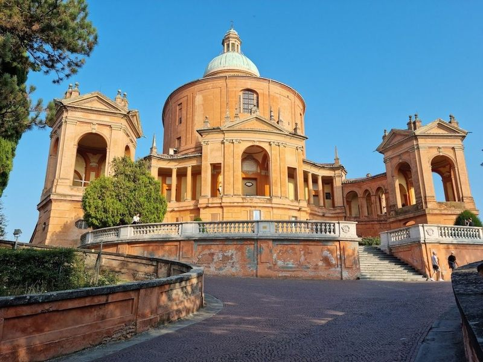
Sanctuary of the Madonna of San Luca
Santuario Madonna di San Luca is a hilltop Roman Catholic sanctuary church in Bologna, Italy. The baroque-style church is dedicated to the Virgin Mary and features a cupola. travellers can embark on a scenic CAI trail that starts in Bologna and follows the arcades of San Luca, offering views as it passes through Casalecchio and ends in Sasso Marconi at the Ponte di Vizzano.
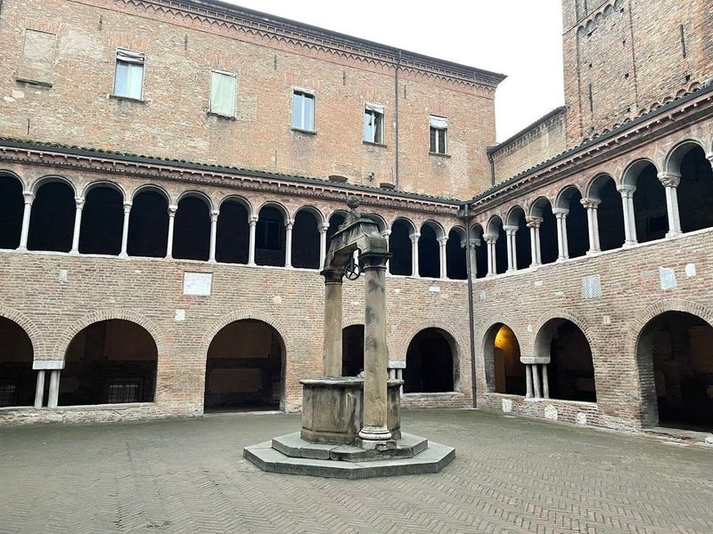
Piazza Santo Stefano
Piazza Santo Stefano, also known as Piazza delle Sette Chiese (Seven churches square), is a pedestrian area in Bologna. The piazza leads to the Seven Churches complex and is surrounded by historic palaces. It's a triangular space with porticos along both long sides and hosts cultural events, flea markets, and concerts.
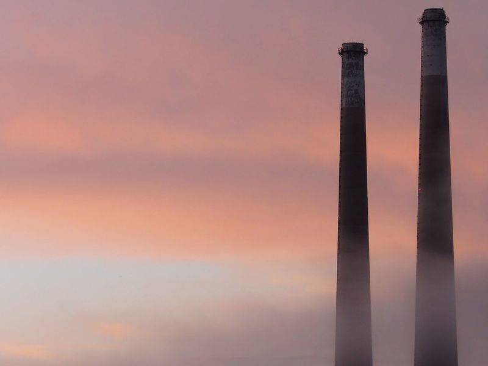
Two Towers
symbols of Bologna, the leaning Asinelli and Garisenda towers provide a fascinating glimpse into the city's medieval past. The site is catalogued as a tourist attraction. The site is catalogued as a tourist attraction. The site is catalogued as a tourist attraction.
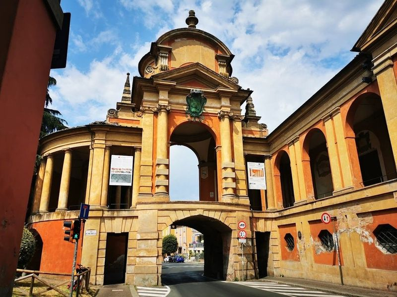
Arco del Meloncello
Arco Del Meloncello is an 18th-century Rococo arch that serves as a crucial point along the Portico di San Luca, the longest arcade in the world. It marks a significant spot for pilgrims on their journey. The arch is located around 1.5 km into the portico and provides a continuation of the structure while crossing over Via Saragozza, leading towards the ascent to the monastery.
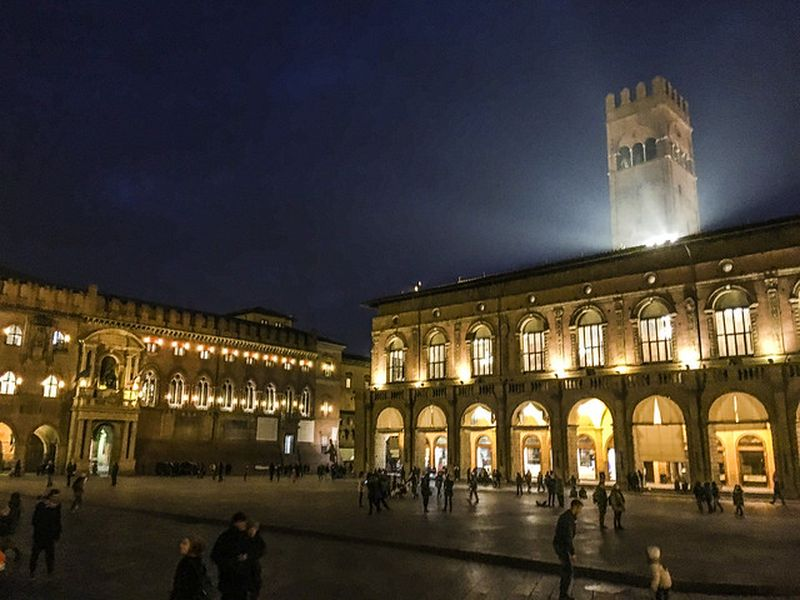
Piazza Maggiore
The heart of Bologna, Piazza Maggiore is a bustling square surrounded by historic buildings, including the Basilica di San Petronio and the Palazzo d'Accursio. The site is catalogued as a tourist attraction. The site is catalogued as a tourist attraction.
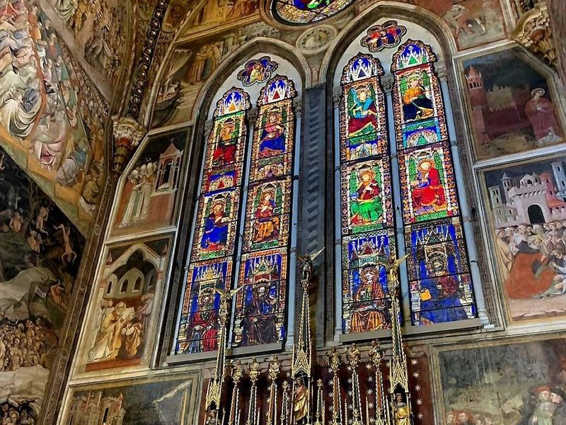
Basilica di San Petronio
Basilica di San Petronio is a grand Gothic basilica in Bologna, dedicated to the city's patron saint, Petronius. The 14th-century edifice boasts an unfinished brick and marble facade and houses 22 art-filled side chapels. It stands as one of Italy's most monumental Gothic basilicas, with a capacity for up to 28,000 people.
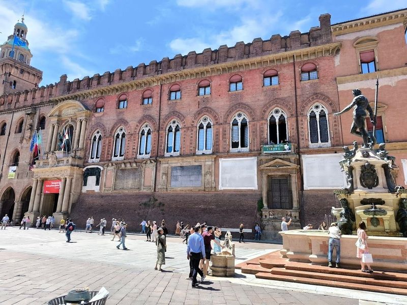
Neptune's Fountain
Neptune's Fountain, also known as the Fountain of Neptune (Fontana del Nettuno), is a 16th-century fountain located in Bologna. This work of art was created by Giambologna and commissioned to glorify the papal government of Pope Pius IV. The fountain stands in the center of Piazza del Nettuno and features a bronze statue of Neptune atop a pedestal, surrounded by spurting mermaids and four heraldic dolphins representing rivers from different continents.
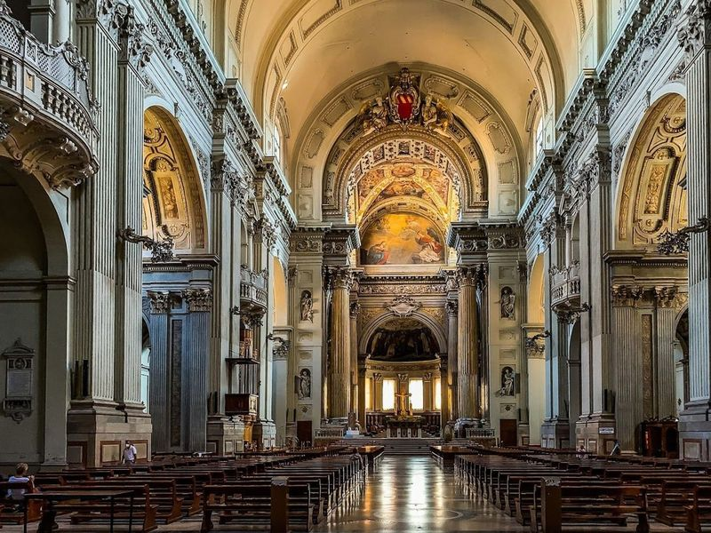
Metropolitan Cathedral of St Peter
Cattedrale Metropolitana di San Pietro, also known as the Duomo di San Pietro, is a Catholic church in Bologna dedicated to the city's patron saint, Petronius. The church was restored in the 17th and 18th centuries and features a tall bell tower and frescoes.
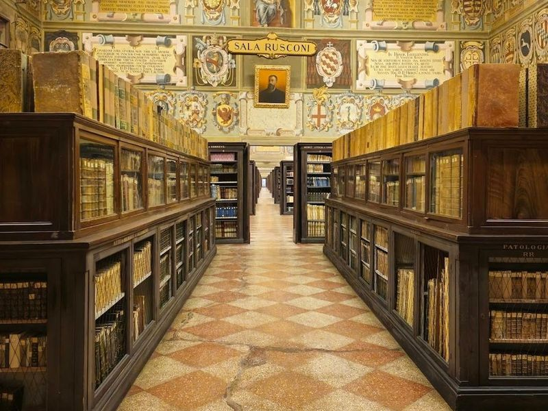
Archiginnasio Municipal Library
Biblioteca Comunale dell'Archiginnasio is a historic building in Bologna that served as the first seat of the University of Bologna. The Anatomical Theatre inside the Archiginnasio provides insight into the early scientific studies of the human body, featuring anatomical models and statues of renowned physicians. The Palazzo dell'Archiginnasio, now housing the municipal library, was constructed in record time to provide a unified space for various academic disciplines.
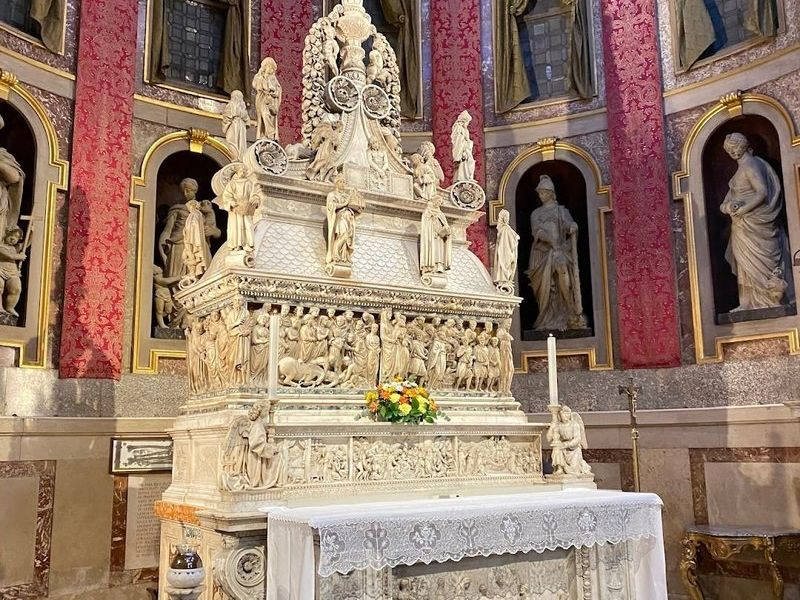
Basilica of San Domenico
The Basilica of San Domenico in Bologna is a significant historic site with a Romanesque facade and houses the remains of Saint Dominic, the founder of the Dominican order. The church features an array of remarkable artworks by renowned artists such as Guercino, Filippino Lippi, and Ludovico Carracci.
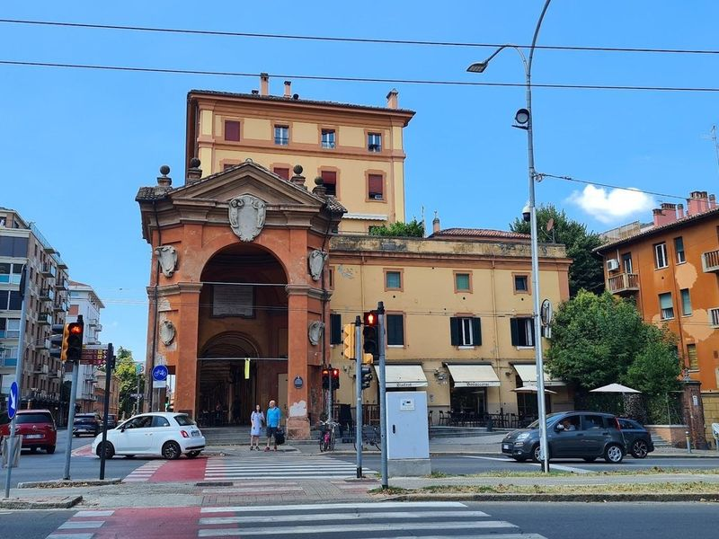
Porta Saragozza
Porta Saragozza is an ancient gate in the southwest of Bologna, dating back to the 13th century. It marks the beginning of a continuous stretch of porticoes leading to Arco Del Meloncello. The uphill climb from Porta Saragozza to the Sanctuary of San Luca can be quite steep, making it necessary to have a moderate fitness level.
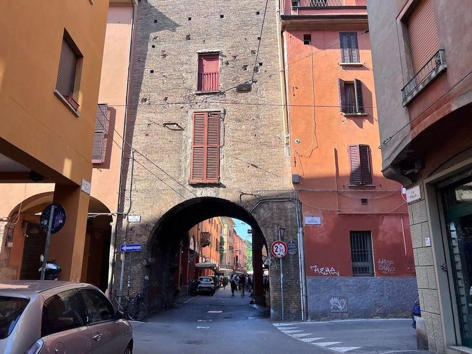
La Piccola Venezia
La Piccola Venezia, also known as "Bologna's little Venice," is a spot in the city that offers a glimpse of its historical waterways. Bologna used to have canals similar to those in Venice, but most were covered with asphalt in the early 20th century. However, Via Piella still features one of the few remaining visible canals. This small window into Bologna's past has become a popular attraction, often drawing crowds eager to capture its picturesque view.
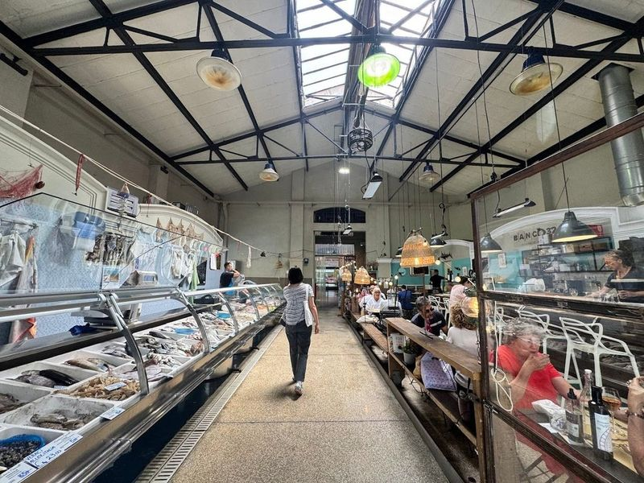
Mercato delle Erbe
Mercato delle Erbe is the largest indoor market in Bologna, offering a wide array of fresh local produce, meats, cheeses, and other specialties. In addition to being a bustling marketplace, it has also become a popular dining destination with various food stalls and eateries serving traditional Italian dishes as well as international cuisine.
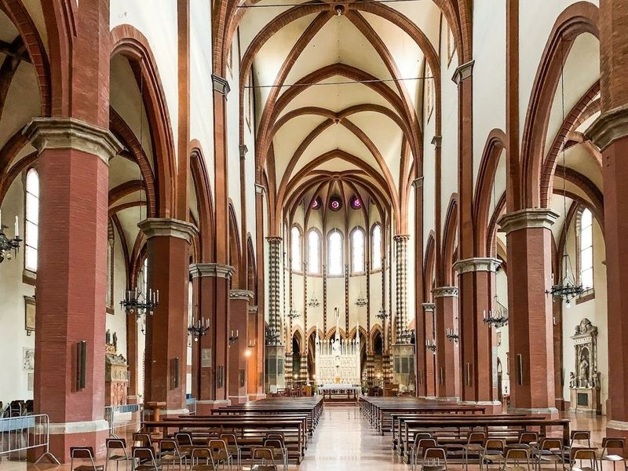
Basilica di San Francesco
Basilica di San Francesco is a French Gothic church completed in 1263 by Franciscan friars. The interior boasts soaring vaulted ceilings, ogival arches, and a marble altar crafted by the Masegne brothers in the 14th century. This notable church in Ravenna, Italy has a rich history dating back to the 5th century and features early Christian and medieval architecture.
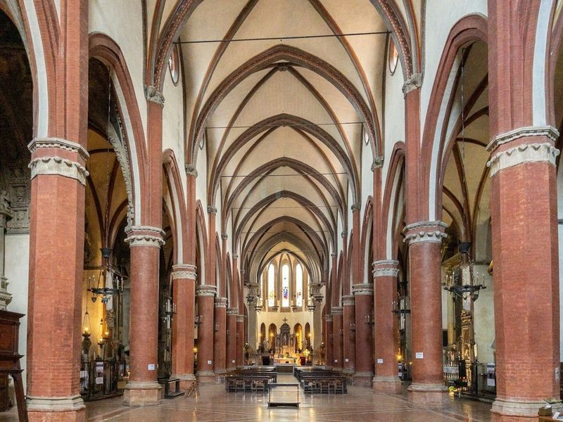
Basilica di Santa Maria dei Servi
Basilica di Santa Maria dei Servi, a former church in Bologna, Italy, is a striking example of Gothic architecture. Construction began in 1393 and continued for several centuries. The basilica features a spacious four-colonnade cloister and late-Gothic Bolognese interiors with three naves divided by columns and pillars supporting pointed arches and a vaulted ceiling.
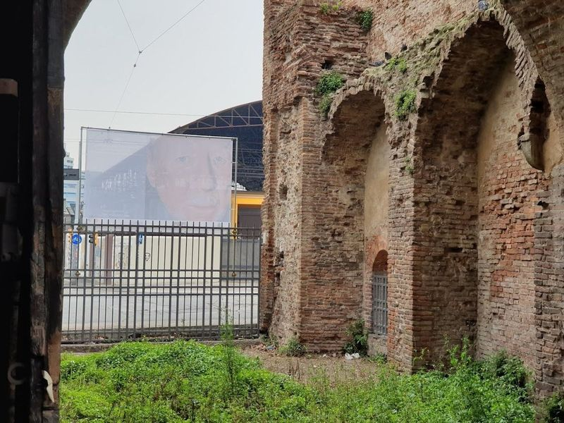
Porta Mascarella
Porta Mascarella is a 13th-century brick tower that was once part of the city's defensive wall. It is located at the end of Via Mascarella, near the Stalingrad Bridge, and served as an entry point to Bologna on the road leading to Malalbergo and Ferrara. The drawbridge was added in 1354 and has since been restored to its original state.